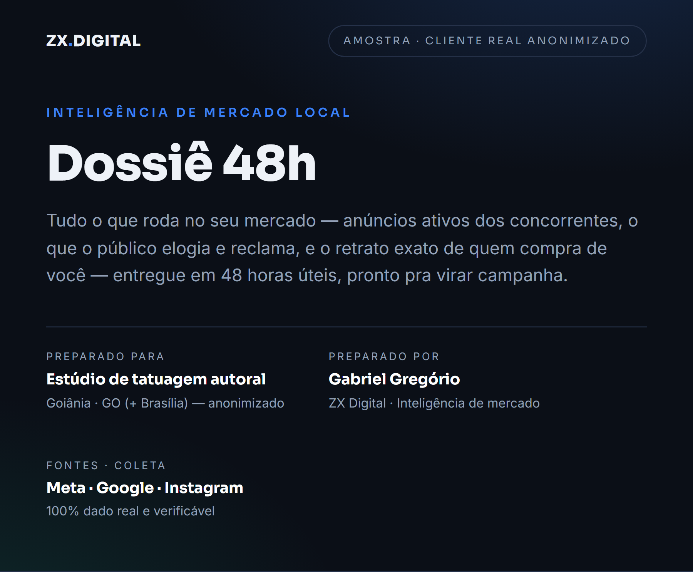
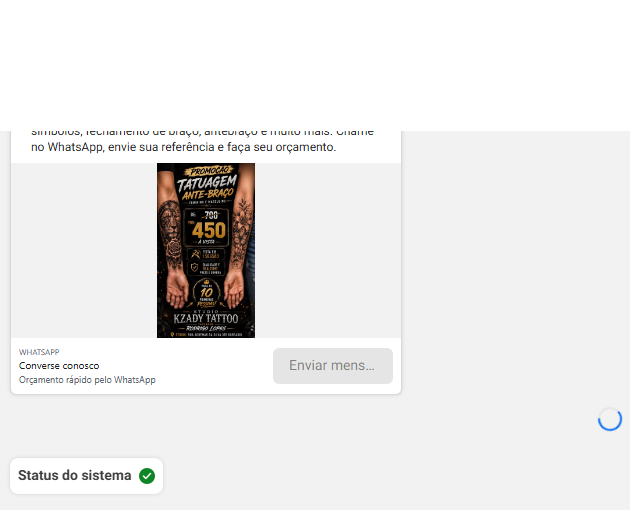
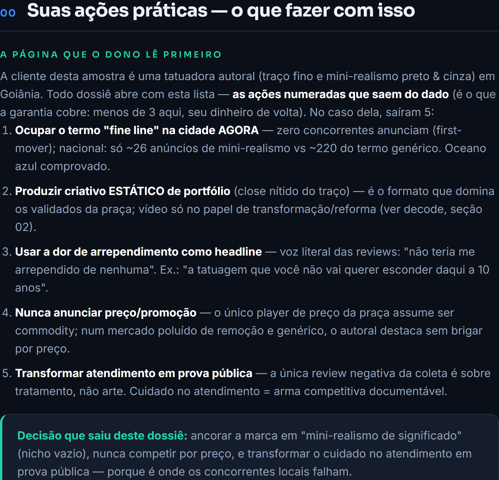
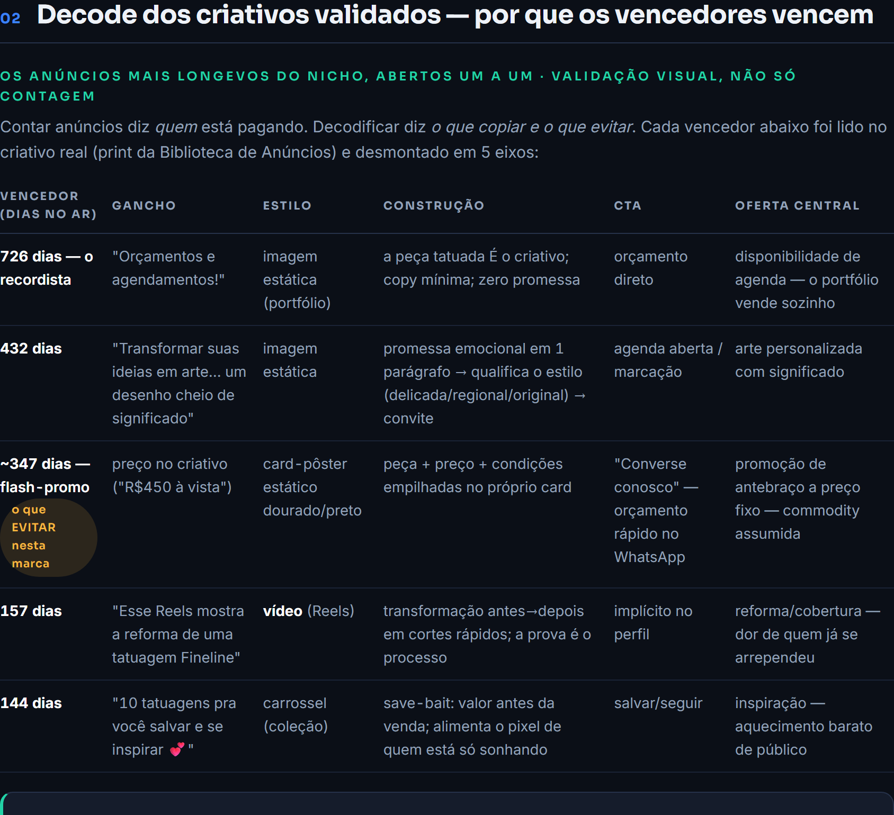

Antes de colocar dinheiro em anúncio, veja o seu mercado como ele realmente é.
Em 48 horas úteis, você recebe um documento que mostra o que os seus concorrentes estão pagando pra anunciar agora, o que o público da sua cidade elogia e reclama deles, e exatamente quais ângulos usar na sua campanha. Todo número com fonte — você pode conferir cada um.
Abre direto no WhatsApp, já com as 3 perguntas que destravam suas 48 horas. Quer ver antes de decidir? Te mando um trecho real de um dossiê na mesma conversa.
Investimento único: R$ 997R$ 497 no PIX ou em até 12x no cartão. Preço de lançamento enquanto montamos os primeiros casos.

Um dossiê real (cliente anonimizado) — é assim que chega na sua mão.
Todo mundo começa anunciando no escuro.
O caminho comum é esse: o negócio decide investir em tráfego, alguém monta um anúncio com um texto que "parece bom"… e as primeiras semanas de verba vão embora testando o que o mercado já tinha respondido — só que ninguém foi lá olhar.
Porque a resposta existe, e é pública. A Biblioteca de Anúncios da Meta mostra todos os anúncios ativos de qualquer concorrente — e há quanto tempo cada um roda. Anúncio que fica meses no ar está pagando a conta de alguém. Isso não é opinião: é validação com o dinheiro dos outros.
O Dossiê 48h vai lá, coleta tudo, e traduz em decisões prontas — antes de você gastar o primeiro real.

Print real da coleta: um concorrente anunciando promoção a preço fixo — no dossiê, isso vira leitura ("ele assumiu ser commodity") e decisão ("essa lane não é a sua").
Um documento, seis leituras do seu mercado — todas apontando pra mesma coisa: sua próxima campanha.
Cada bloco responde uma pergunta que hoje você responde no chute. Juntos, eles montam o mapa completo: quem está anunciando, por que os vencedores vencem, o que o público quer ouvir — e como transformar isso em anúncio.
Radar Meta
Quem anuncia no seu nicho e na sua cidade, e há quanto tempo cada anúncio roda. Os que estão no ar há meses são os que dão retorno — e você vai saber exatamente quais são.
Decode dos vencedores
Os anúncios mais duradouros do seu mercado, abertos um a um: o gancho, o formato que domina a sua praça, a construção do criativo, o CTA e a oferta por trás. É o que separa espiar o concorrente de saber reproduzir o acerto dele.
Radar Google
As avaliações dos seus concorrentes, mineradas: o que o público elogia neles, do que reclama — e onde está a brecha que a sua comunicação pode ocupar.
Instagram do nicho
O que quem domina a sua categoria na sua região está fazendo no feed: formato, frequência e tom — pra você não postar no vazio.
Retrato do seu cliente
Quem compra de você, o que teme, como fala — construído com as palavras reais colhidas do seu mercado, não com suposição de reunião.
Tabela de ângulos
A síntese de tudo: ângulo, gancho, formato e prova — cada linha com a tag do anúncio real que a valida. Seu gestor de tráfego começa a produzir no dia em que recebe.

Primeira página de um dossiê real: a lista numerada de ações. Neste caso, saíram 5 — da campanha pra ocupar um termo sem concorrência até a headline tirada da boca do próprio público.
A primeira página já diz o que fazer.
Dossiê não é relatório pra admirar — é instrução de uso do seu mercado. Por isso todo dossiê abre com a lista numerada de ações práticas: o que ocupar, o que produzir, o que dizer e o que evitar. Você lê a primeira página e já sabe o próximo passo.
Neste caso real, o dado mostrou que ninguém anunciava o nicho da cliente na cidade dela — um espaço vazio que ela ocupou primeiro. Também mostrou qual formato de criativo domina a praça e qual frase o público repetia nas avaliações. Cada descoberta virou uma linha da lista.
Não é só quem vence. É por que vence.
Ferramentas de espionagem mostram o anúncio do concorrente e param aí. O decode vai além: desmonta os vencedores em cinco eixos — gancho, estilo, construção, CTA e oferta — e entrega o veredito que muda a sua produção: qual formato domina a sua praça.
Em um dos nossos casos, essa leitura inverteu o plano inteiro: a praça pedia foto de portfólio, não o vídeo elaborado que ia ser produzido. Uma descoberta dessas paga o dossiê muitas vezes.

O decode em ação: cada vencedor da praça aberto em 5 eixos — incluindo o que não copiar.
Três passos. Você só dá o primeiro.
Você manda 3 respostas
Seu segmento, a cidade onde quer clientes e — se quiser — os concorrentes que você admira ou teme. Cinco minutos no WhatsApp, e é tudo o que precisamos de você.
A gente minera o seu mercado
Biblioteca de Anúncios da Meta, avaliações do Google e Instagram do seu nicho, na sua praça. Coleta real, com print e fonte. O relógio de 48 horas úteis começa aqui.
Você recebe o dossiê completo
Com a lista de ações na primeira página. Bônus incluído: 15 minutos de leitura guiada comigo, pra você sair sabendo exatamente o que fazer — e por quê.
Garantia simples, sem letra miúda
Todo dossiê sai com a lista numerada de ações práticas pra sua campanha — no mínimo 3. Se você ler e não encontrar nem 3, devolvo os R$ 497. Sem formulário, sem discussão. O risco é meu.
Feito pra quem vai investir em tráfego nos próximos 90 dias.
Se anúncio está nos seus planos, este dossiê custa menos que um dia de verba desperdiçada em ângulo errado — e evita semanas delas. E se a gente descobrir que ninguém anuncia o seu nicho na sua cidade? Essa é das melhores respostas que existem: significa que o espaço está vazio, esperando o primeiro.
E pra quem não é: se você não vai colocar dinheiro em anúncio tão cedo, o dossiê vira um relatório bonito na gaveta. Ele vale pra quem vai agir com o que está dentro.
Quem assina é Gabriel Gregório, fundador da ZX Digital. Este é o mesmo processo de inteligência que roda por trás das campanhas de dezenas de negócios locais que a gente gerencia todo mês — agora, aberto como produto.
O que costumam perguntar antes de pedir.
Serve pro meu segmento?
Se o seu cliente te procura pelo Google, Instagram ou WhatsApp — serve. Clínicas, estúdios, serviços, comércio local, profissionais liberais. A fonte de dado é a mesma; o que muda é o que a gente encontra nela.
O que eu preciso mandar?
Três respostas: seu segmento, a cidade ou região onde você quer clientes, e (se quiser) os concorrentes que você admira ou teme. Cinco minutos no WhatsApp e as 48 horas começam a contar.
E se ninguém anunciar no meu nicho na minha cidade?
Essa é uma das melhores respostas possíveis: significa que o espaço está vazio e você pode ocupá-lo primeiro. O dossiê mostra isso com evidência — e completa a leitura com o benchmark nacional do seu nicho, que sempre existe.
Isso substitui meu gestor de tráfego?
Não — abastece. O dossiê é a inteligência que o gestor gastaria semanas de verba pra descobrir testando. Ele recebe a tabela de ângulos pronta e começa a produzir campanha no mesmo dia. Se você ainda não tem gestor, o dossiê também te dá clareza pra contratar melhor.
Como eu recebo?
Documento completo no seu WhatsApp ou e-mail, em até 48 horas úteis a contar do seu OK — mais os 15 minutos de leitura guiada comigo, incluídos.
Como funciona a garantia?
Todo dossiê abre com a lista numerada de ações práticas — no mínimo 3. Se você ler e não encontrar nem 3, devolvo os R$ 497. Sem formulário, sem discussão.
Seu mercado já respondeu. Falta você ler.
Manda as 3 respostas no WhatsApp e em 48 horas úteis o raio-X completo do seu mercado está na sua mão — com as ações numeradas na primeira página e a garantia cobrindo o risco.
Sem compromisso — a primeira conversa é só pra entender o seu caso. R$ 997 R$ 497 no lançamento · PIX ou 12x.